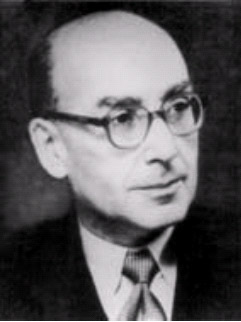

|  |
Goldmann perimetry
Goldmann tonometer
Goldmann-Favre disease = a syndrome that consists of congenital retinoschisis indistinguishable ophthalmoscopically from the X-linked recessive type with pigmentation in the fundus, complete night blindness, or loss of the scotopic b-wave of the ERG.83, 84 The disease is transmitted by autosomal recessive inheritance.
Swiss ophthalmologist who was born in the Austro-Hungarian Empire (later Czechoslovakia) in the town of Komotau. He attended a local Catholic school, which engaged a Jewish scholar to instruct Goldmann in religion.
Goldmann demonstrated great skill in mathematics and science early in
life, and he decided to become an astronomer. His father urged him, however,
to “do something practical.” Accordingly, Goldmann went to Prague and studied
medicine at the German Charles University, obtaining his degree in 1923.
From 1919 to 1924 Goldmann was assistant to Professor Tschermak von Seyseneck
in the Physiologic Institute. His first task was to reassemble a Hering
calorimeter. This task stimulated a lifelong interest in optics, physics,
and instruments, as well as confirming Goldmann’s suspicion that he was
an anomalous trichromat. In 1924, Goldmann became an assistant at the University
Eye Clinic in Bern under the direction of Professor Augus Siegrist. In
1927 he was
appointed Oberarzt and in 1930 Privatdozent at the clinic.
Upon the retirement of Siegrist in 1935, Goldmann became professor of ophthalmology and director of the University Eye Clinic. Many years later Goldmann was appointed chancellor of Bern University. He published papers on cataract, retrobulbar neuritis, uveitis, retinopathy of prematurity, aqueous humor dynamics, nyctalopia, dark adaptation, glaucoma, accommodation, perimetry, and diabetic retinopathy. Students and colleagues from many countries went to Bern and were stimulated by the keen intellectual atmosphere that permeated Goldmann’s clinic. Goldmann’s major contribution to ophthalmology was in the development and refinement of instruments, including the slit lamp, colorimeter, bowl perimeter, applanation tonometer, gonioprisms, dark adaptometer, and fluorophotometer. Because of these contributions, Goldmann was one of the foremost ophthalmologists of the 20th Century.